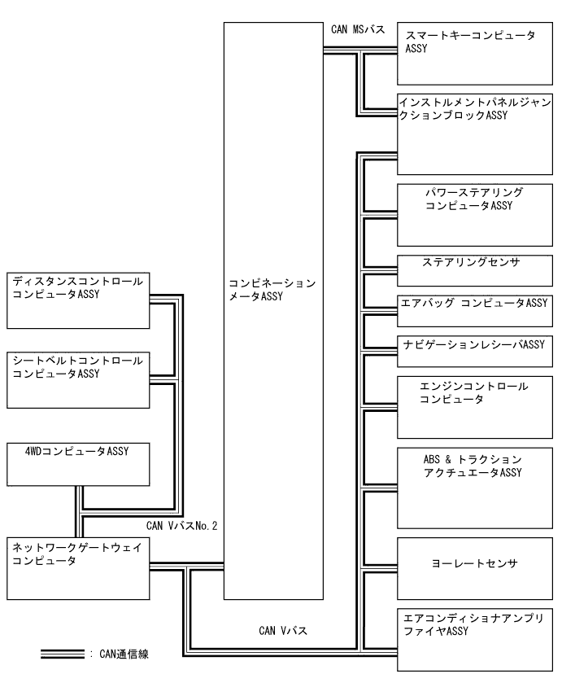
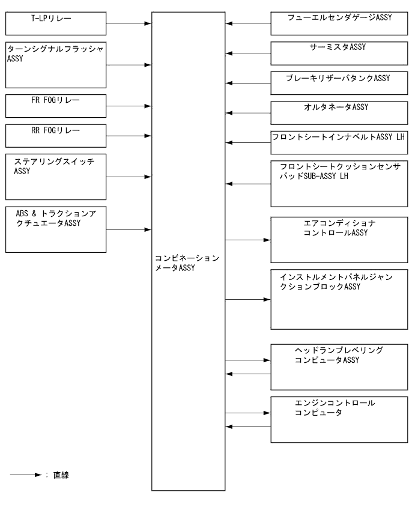
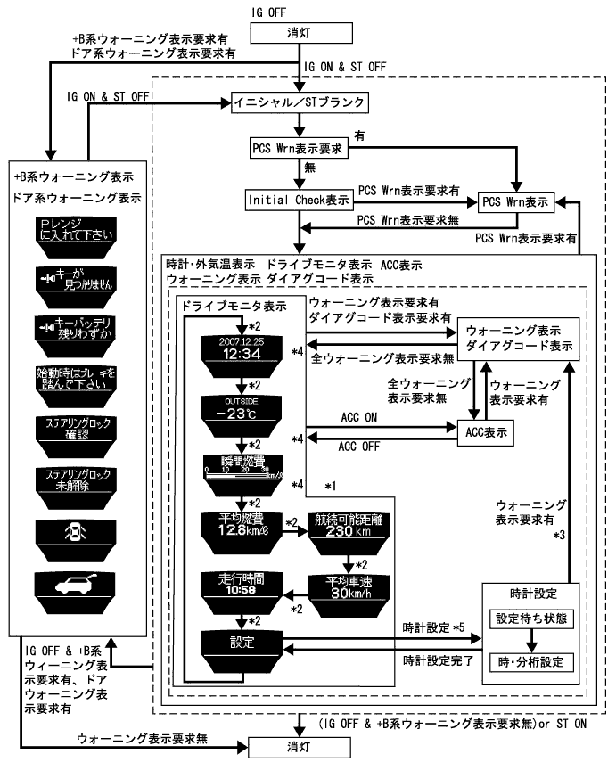
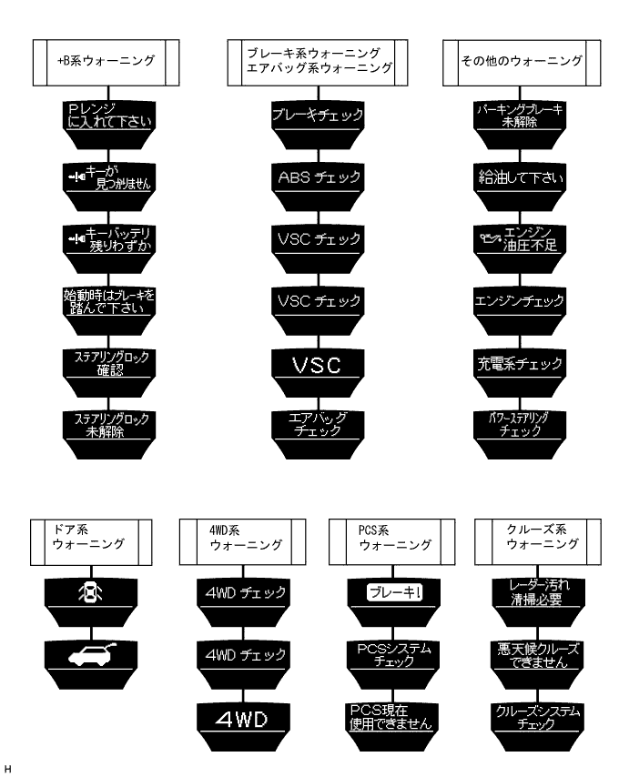

Meter & Gauge System Function Description |
Signals that drive the indicator lights, warning lights, buzzers and multi-information display of the combination meter assembly via CAN communication or direct lines.


| Meter/Gauge | Status | Input/Output | Signal | CAN/Direct Line | Transmitting ECU |
|---|---|---|---|---|---|
| Speedometer | Pointer drive | Input | Vehicle Speed | CAN | ABS & Traction Actuator Assembly |
| Tachometer | Pointer drive | Input | Engine Speed | CAN | Engine Control Computer |
| Water temperature receiver gauge | Pointer drive | Input | Engine coolant temperature | CAN | Engine Control Computer |
| Fuel receiver gauge | Pointer drive | Input | Fuel level value | Straight Line | Fuel Sender Gauge Assembly |
| Input | Vehicle speed, shift position information (P/N), parking brake information | CAN | ABS & traction actuator assembly Engine control computer Instrument panel junction block assembly | ||
| Odometer/Trip Meter | Numeric display | Output | Odometer data | CAN | ABS & Traction Actuator Assembly |
| Indicator Lights/Warning Lights | Status | Input/Output | Signal | CAN/Direct Line | Transmitting ECU |
|---|---|---|---|---|---|
| A/T shift position | Illuminated | Input | Shift position "P, R, N, D, 4, 3, 2, L, B" | CAN | Engine Control Computer |
| M indicator light | Illuminated | Input | Shift position "M" | CAN | Engine Control Computer |
| FUEL level warning light | Illuminated | Input | Fuel level value (approximately 9.0L) | Straight Line | Fuel sender gauge assembly |
| TAIL indicator light | Illuminated | Input | Dimmer switch TAIL ON | Straight Line | TAIL relay |
| TURN R/L indicator light | Blinking | Input | Dimmer switch L/R | Straight Line | Flasher Relay |
| Fr FOG indicator light | Illuminated | Input | Front fog light ON | Straight Line | FR FOG relay |
| Rr FOG indicator light | Illuminated | Input | Rear fog light ON | Straight Line | RR FOG relay |
| P/S warning light | Blinking/on | Input | P/S system malfunction | CAN | Power Steering Computer Assembly |
| Airbag Warning Light | Blinking/on | Input | Airbag system malfunction | CAN | Airbag Computer Assembly |
| MASTER warning light | Blinking/on | Output | Malfunction of a system shown on the multi-display | CAN | Combination Meter Assembly |
| ABS warning light | Blinking/on | Input | ABS system malfunction | CAN | ABS & Traction Actuator Assembly |
| Eco drive indicator light | Illuminated | Input | Vehicle Speed | CAN | ABS & Traction Actuator Assembly |
| Accelerator opening ratio Shift position Engine speed Engine model information | CAN | Engine Control Computer | |||
| D seat seat belt warning light | Blinking | Input | D seat seat belt not fastened | CAN | Instrument Panel Junction Block Assembly |
| SLIP indicator light | Blinking/on | Input | During TRC or VSC operation (blinking) VSC system malfunction (on) | CAN | ABS & Traction Actuator Assembly |
| Brake warning light | Illuminated | Input | Brake warning light Parking brake applied | CAN | ABS & traction actuator assembly Instrument panel junction block assembly |
| Abnormal brake fluid level | Straight Line | Reservoir tank | |||
| CHARGE warning light | Illuminated | Input | Alternator L terminal | Straight Line | Alternator |
| Output | CHARGE malfunction | CAN | Combination Meter Assembly | ||
| BEAM indicator light | Illuminated | Input | Dimmer switch HI | Straight Line | DIMMER relay |
| CHECK E/G warning light | Illuminated | Input | Engine system malfunction | Straight Line | Engine Control Computer |
| AUTO LEVELING warning light | Illuminated | Input | Automatic leveling system malfunction | Straight Line | Headlight Leveling Computer |
| 4WD AUTO indicator light | Illuminated | Input | 4WD AUTO system operating | CAN | 4WD Computer Assembly |
| Seat belt warning light (P seat) | Blinking | Output | P seat seat belt not fastened | Straight Line | Combination Meter Assembly |
| Input | P seat occupied | Straight Line | Front seat cushion sensor pad sub-assembly LH | ||
| Seat belt not fastened | Straight Line | Front Seat Inner Belt Assembly LH | |||
| A/T OIL TEMP warning light | Illuminated | Input | AT fluid temperature warning | CAN | Engine Control Computer |
| Multi-information | Status | Input/Output | Signal | CAN/Direct Line | Transmitting ECU |
|---|---|---|---|---|---|
| Current Fuel Consumption | Display | Input | Engine speed Fuel injection volume Vehicle speed | CAN | Engine control computer ABS & traction actuator assembly |
| Cumulative Average Fuel Consumption | Display | Input | Engine speed Fuel injection volume Vehicle speed | CAN | Engine control computer ABS & traction actuator assembly |
| Cumulative Average Vehicle Speed | Display | Input | Engine speed Vehicle speed | CAN | Engine control computer ABS & traction actuator assembly |
| Cumulative Driving Time | Display | Input | Engine Speed | CAN | Engine Control Computer |
| Cruising Range | Display | Input | Engine speed Fuel injection volume | CAN | Engine Control Computer |
| Fuel level value | Straight Line | Fuel Sender Gauge Assembly | |||
| Outside temperature | Display | Input | Vehicle Speed | CAN | ABS & Traction Actuator Assembly |
| Outside temperature (sensor input value) | Straight Line | Temperature sensor | |||
| Output | Outside temperature (calculated value) | CAN | Meter ECU | ||
| Brake check | Display | Input | Brake system malfunction | CAN | ABS & Traction Actuator Assembly |
| ABS check | Display | Input | ABS system malfunction | CAN | ABS & Traction Actuator Assembly |
| VSC check | Display | Input | VSC system malfunction | CAN | ABS & Traction Actuator Assembly |
| VSC | Display | Input | VSC system malfunction | CAN | ABS & Traction Actuator Assembly |
| Parking brake not released | Display | Input | Parking brake applied | CAN | Instrument Panel Junction Block Assembly |
| Airbag check | Display | Input | Airbag system malfunction | CAN | Airbag Computer Assembly |
| Charging system check | Display | Input | Alternator L terminal | Straight Line | Alternator Assembly |
| Output | CHARGE malfunction | CAN | Combination Meter Assembly | ||
| Please refuel | Display | Input | Fuel level value (approximately 9.0L) | Straight Line | Fuel Sender Gauge Assembly |
| Low engine oil pressure | Display | Input | Engine oil pressure drop malfunction | Straight Line | Engine oil pressure sensor assembly |
| Engine check | Display | Input | Engine system malfunction | Straight Line | Engine Control Computer |
| Door warning | Display | Input | Courtesy light switch (D, P, RR, RL) | CAN | Instrument Panel Junction Block Assembly |
| Back door/luggage door warning | Display | Input | Courtesy light switch (back door) | CAN | Instrument Panel Junction Block Assembly |
| Gear position | Display | Input | Shift Position | CAN | Engine Control Computer |
| 4WD | Display | Input | 4WD system malfunction | CAN | 4WD Computer Assembly |
| Shift to P range | Display | Input | Exiting vehicle with shift position other than P (power switch left on) | CAN | Smart Key Computer Assembly |
| Key not detected | Display | Input | Exiting vehicle with shift position other than P (power switch left on) Exiting vehicle with shift position in P (power switch left on) Key taken out by passenger Electronic key outside detection area | CAN | Smart Key Computer Assembly |
| Key battery low | Display | Input | Electronic key battery low | CAN | Smart Key Computer Assembly |
| Depress brake when starting | Display | Input | Brake not depressed when IG ON | CAN | Smart Key Computer Assembly |
| Check steering lock | Display | Input | Steering lock malfunction | CAN | Smart Key Computer Assembly |
| Steering Lock Not Released | Display | Input | Steering Lock Not Released | CAN | Smart Key Computer Assembly |
| PCS system check | Display | Input | PCS system malfunction | CAN | Seat Belt Control Computer |
| PCS currently unavailable | Display | Input | PCS system stopped (heat protection/dirty lens, etc.) | CAN | Seat Belt Control Computer |
| Radar dirty, cleaning necessary | Display | Input | Dirty radar | CAN | Distance control computer |
| Cruise Not Available in Bad Weather | Display | Input | Bad weather | CAN | Distance control computer |
| Check Cruise System | Display | Input | Cruise control system malfunction | CAN | Distance control computer |
| Power steering system check | Display | Input | Power steering system malfunction | CAN | Power Steering Computer Assembly |
| Buzzer | Status | Input/Output | Signal | CAN/Direct Line | Transmitting ECU |
|---|---|---|---|---|---|
| Reverse | Intermittent sound | Input | Shift position "R" | CAN | Engine Control Computer |
| Light reminder | Continuous sound | Input | Dimmer switch TAIL ON | Straight Line | TAIL relay |
| Input | D seat courtesy switch signal | CAN | Instrument Panel Junction Block Assembly | ||
| Sport Shift Reject | 2 beeps | Input | Sport Shift Reject | CAN | Engine Control Computer |
| D seat seat belt buzzer | Intermittent sound | Input | D seat buckle switch not fastened | CAN | Instrument Panel Junction Block Assembly |
| Vehicle Speed | CAN | ABS & Traction Actuator Assembly | |||
| P seat seat belt buzzer | Intermittent sound | Input | P seat occupied P seat buckle switch not fastened | Straight Line | P seat occupant sensor P seat buckle switch |
| Vehicle Speed | CAN | ABS & Traction Actuator Assembly | |||
| Smart | Single beep | Input | Exiting vehicle in P position with power switch left on Electronic key outside detection area Electronic key battery low Key taken out by passenger | CAN | Smart Key Computer Assembly |
| Intermittent sound | Input | Electronic key reminder | CAN | Smart Key Computer Assembly | |
| Continuous sound | Input | Exiting vehicle with shift position other than P (power switch left on) Smart door ajar | CAN | Smart Key Computer Assembly | |
| Radar Cruise Low Speed Cancel | 2 beeps | Input | Radar Cruise Low Speed Cancel | CAN | Distance control computer ABS & traction actuator assembly |
| Radar Cruise Warning | Single beep | Input | Radar cruise malfunction | CAN | Distance control computer |
| PKB-ON driving warning | Intermittent sound | Input | Vehicle Speed | CAN | ABS & Traction Actuator Assembly |
| Parking brake SW signal | Instrument Panel Junction Block Assembly | ||||
| EPS warning | Single beep | Input | Power steering system malfunction | CAN | Power Steering Computer Assembly |
Multi-information Display Flowchart

Warning Display
| Display Priority Level | Display Order | Item | Multi Buzzer Sound | Power Source Condition | Manual Cancel Possible | Master Telltale ● On ■ Blinking | Remarks | |
|---|---|---|---|---|---|---|---|---|
| IG | +B | |||||||
| 0 | 0 | VSC check | - | ○ | - | - | ● | Initial display 2s |
| 1 | VSC | - | ○ | - | - | ■ 4Hz | Initial display 2s | |
| 2 | 4WD check | - | ○ | - | - | ● | Initial display 2s | |
| 3 | 4WD | - | ○ | - | - | ■ 4Hz | Initial display 2s | |
| 1 | 4 | Brake check | ○ | ○ | - | - | ● | - |
| 2 | 5 | Key not detected | *1 | ○ | ○ | - | ● | - |
| 6 | Depress brake when starting | ○ | ○ | ○ | - | ● | - | |
| 7 | Shift to P range | *1 | ○ | ○ | - | ● | - | |
| 8 | Steering Lock Not Released | - | ○ | ○ | - | ● | - | |
| 9 | Door ajar warning (graphic) | - | ○ | ○ | - | ● | Initial display 2s | |
| 10 | Parking brake not released | - | ○ | - | - | ■ 2Hz | - | |
| 3 | 11 | ABS check | ○ | ○ | - | - | ● | - |
| 12 | VSC check | ○ | ○ | - | - | ● | - | |
| 13 | Airbag check | ○ | ○ | - | - | ● | - | |
| 14 | Cruise Not Available in Bad Weather | ○ | ○ | - | - | ● | - | |
| 15 | 4WD system malfunction | ○ | ○ | - | - | ● | - | |
| 16 | Power steering check | *2 | ○ | - | - | ● | - | |
| 17 | Low engine oil pressure | ○ | ○ | - | - | ● | - | |
| 18 | Engine check | ○ | ○ | - | - | ● | - | |
| 19 | Charging system check | ○ | ○ | - | - | ● | - | |
| 20 | Check steering lock | - | ○ | ○ | - | ● | - | |
| 21 | PCS system check | ○ | ○ | - | - | ● | - | |
| 22 | PCS currently unavailable | ○ | ○ | - | - | - | - | |
| 23 | Radar dirty, cleaning necessary | *1 | ○ | - | - | ● | - | |
| 24 | Check Cruise System | *1 | ○ | - | - | ● | - | |
| 4 | 25 | Key battery low | *1 | ○ | ○ | - | ● | - |
| 5 | 26 | Please refuel | ○ | ○ | - | ○ | ● | - |
Warnings are scrolled automatically.
When warnings occur, they are displayed in order from the lowest display priority level number.
When multiple warnings occur, each warning is displayed at 2-second intervals. However, a newly occurring warning is displayed for 6 seconds the first time only.
"Depress brake when starting" is not displayed on the meter with IG ON because the transmitting ECU does not send it with IG ON.
Warning Display List by System
